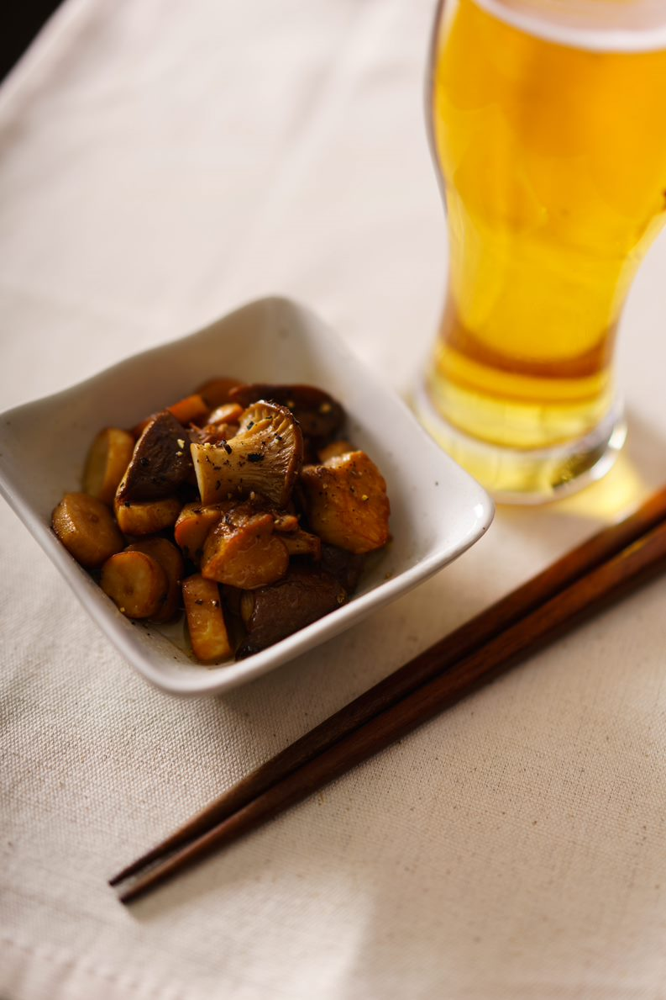

Butter Soy Sauce Eringi

How to make Butter Soy Sauce Eringi
Nothing complements beer quite like buttery fried mushrooms. Well, that is not strictly true - in fact, there is one food item that complements beer even better: buttery soy sauce fried mushrooms!
This is another spectacularly simple recipe. All you need equipment-wise is a frying pan, and all you need refreshment wise is a glass of nice, cold beer.
Ingredients
- 200g eringi (king oyster) mushrooms, chopped into bite-sized pieces
- Knob of butter, for frying
- A splash of good, Japanese soy sauce (Kikkoman or equivalent)
- Pepper to finish
Method
- Melt your butter in a small frying pan over a low heat.
- Once melted, add mushrooms. Stir occasionally to cook evenly.Mushrooms are miraculously hard to burn, so keep them cooking til they're nice and browned.
- Once nice and brown, finish by stirring through soy sauce and freshly ground black pepper.
- Serve alongside an ice-cold glass of light lager beer.
Back to Recipe List